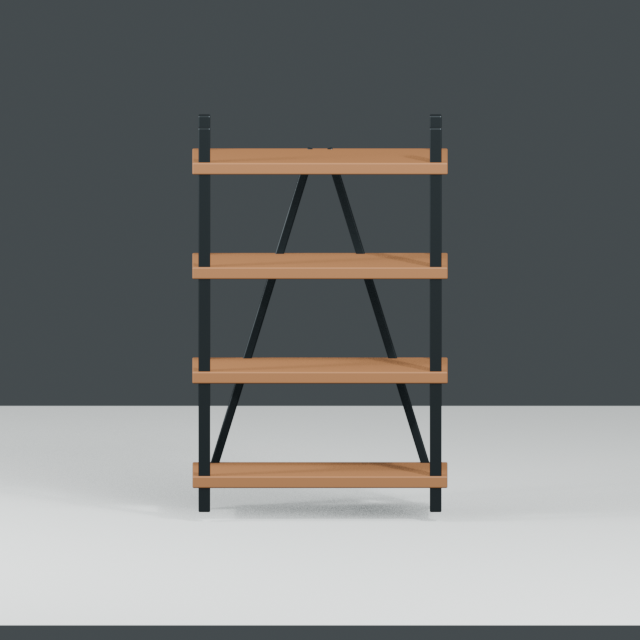
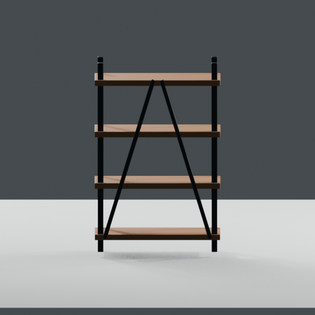
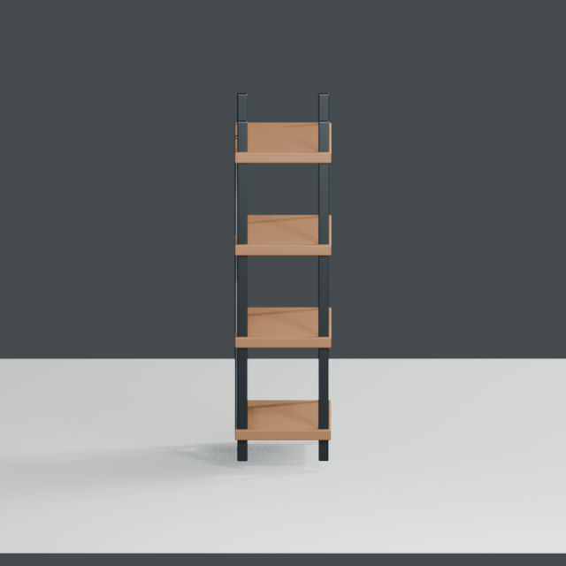
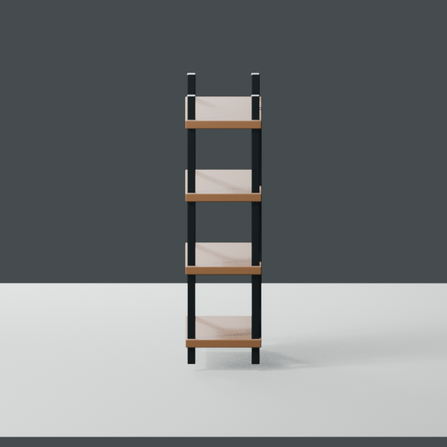
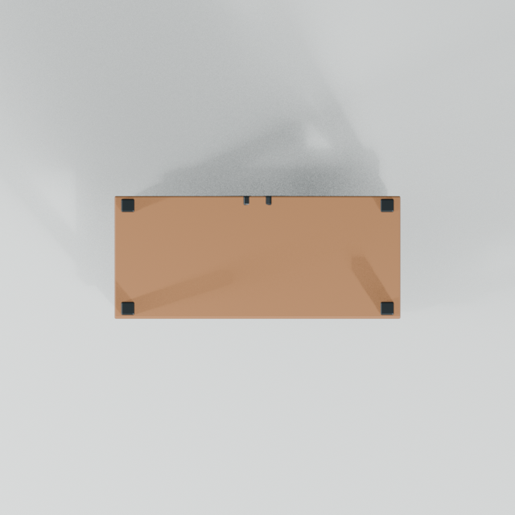

Tables / Stools / Shelves
Open Frame Shelf
Generic original design. 4段の木製棚板と細い金属フレームを共通primitiveから決定論的に生成します。
0.75 × 0.32 × 1.20 m
Price hypothesis: ¥300
Unity: UNVERIFIED
VRChat: UNVERIFIED
BOOTH: UNVERIFIED
利用条件: DRAFT
形状・素材値はKAFKA2306/vrmineのオリジナルですが、BOOTH向け利用条件は未確定です。商用利用可能とはまだ確認していません。
形状・素材値はKAFKA2306/vrmineのオリジナルですが、BOOTH向け利用条件は未確定です。商用利用可能とはまだ確認していません。
取得
一括取得はBLEND / GLB / FBXの公開bytesをmanifestのSHA-256と照合してから、manifest・specと同じTARにまとめます。
導入
BlenderはBLEND、UnityはFBX、その他の3DツールはGLBを入口にします。Unity Editor / VRChat runtimeでの動作はまだ未確認です。




